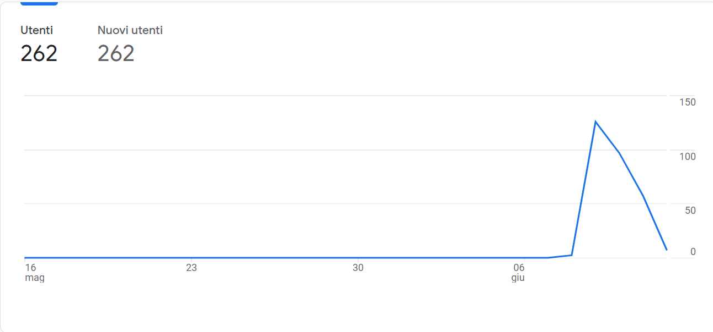

Struttura e layout
Linguaggi e strumenti
Il sito è stato realizzato utilizzando HTML5, CSS3 e Javascript. Sono partita da un template di StartBootstrap, che ho modificando aggiungendo elementi grazie alle librerie di codice di Bootstrap. Inoltre ho utilizzato Fontawesome per le icone, Googlefont per i font, Favicon per l'icona nel tab. Per architettura del sito e wireframe ho utilizzato Canva. Inoltre, per raccogliere le statistiche del sito ho usato Google Analytics.
Communication strategy e obiettivi comunicativi
I competitor hanno siti dispersivi e non ben calibrati sul target. Inoltre, il modo in cui sono graficamente disposti non permette una comprensione veloce e minimizza le possibilità di conversioni e contatti. Lo scopo del mio sito è quindi di concentrarmi sul target e ridare centralità ai contatti.
Target Audience e messaggio
Il target primario consiste in aziende di logistica, quindi di persone indicativamente dai 35 anni in su. L'obiettivo sarà raggiunto attraverso il passaparole con le numerose aziende con cui già si collaborava, che fungono da punto di contatto con nuovi clienti. Il maggiore ostacolo è l'assenza totale dei possibili clienti dai social.
Il messaggio del sito si incentra sull'affidabilità dell'azienda. La centralità delle informazioni di contatto vuole essere un incentivo al primo contatto diretto con l'azienda. La possibilità di richiedere un preventivo via mail può incentivare il contatto da aziende che stanno valutando diverse soluzioni.
Il messaggio del sito si incentra sull'affidabilità dell'azienda. La centralità delle informazioni di contatto vuole essere un incentivo al primo contatto diretto con l'azienda. La possibilità di richiedere un preventivo via mail può incentivare il contatto da aziende che stanno valutando diverse soluzioni.
Promozione
Il sito è stato promosso principalmente attraverso il passaparola. Dato che i contatti con le aziende avvengono o per messaggio o per email ho sfruttato entrambi i mezzi, creando anche una mailing list.
Valutazione dei risultati
Il principale obiettivo, alla luce della quantità di clienti già acquisiti e dei clienti che si puntavano ad acquisire, era di raggiungere almeno 150 utenti nei giorni successivi alla pubblicazione del sito. Con 262 utenti unici, l'obiettivo è stato raggiunto e superato.
